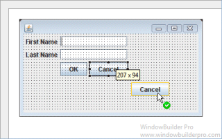
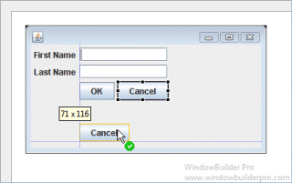

This page is used to control various Swing > Layouts > Absolute options.
Use 'Free' component placement style
This preference determines whether free mode is used for aligning widgets. Free mode uses widget snapping similar to that used for GroupLayout.


Component Gaps
This preference determines what default gaps are used between components in free mode.
Container Gaps
This preference determines what default gaps are used between components and their containers in free mode.
Apply 'grid' creation flow
This preference determines whether the creation order of the widgets will be adjusted to reflect their positions in a left-to-right, top-to-bottom grid flow. This will affect the default tab order.
Use Grid Snapping
This preference determines whether grid mode is used for aligning widgets. Grid mode uses a user customizable snapping grid.

Grid Step
This preference determines the grid step used in grid mode.

Display Grid
This preference determines whether the grid is displayed in grid mode.

Display location/size hints
This preference determines whether location and size hints are shown when moving or sizing widgets.
